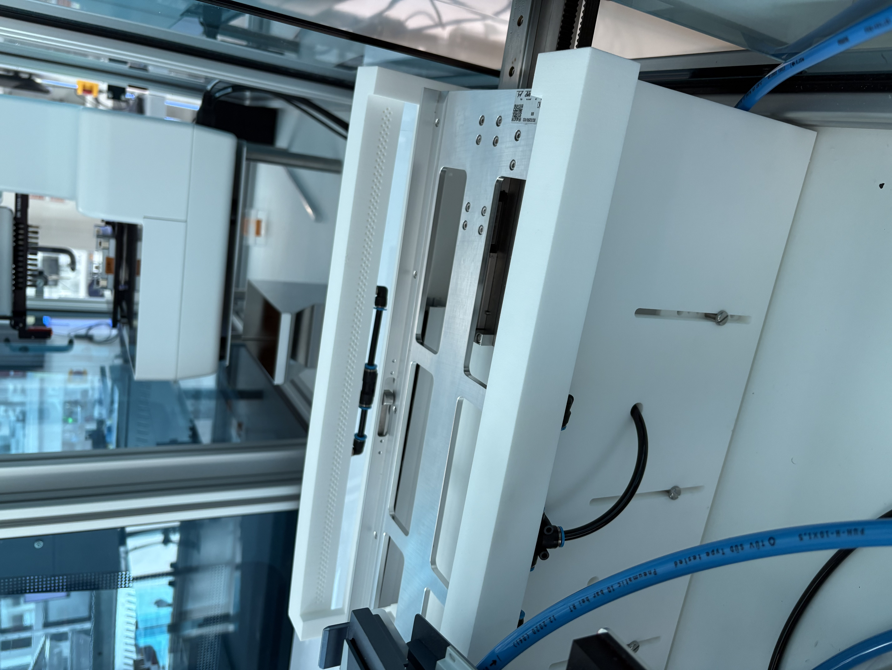
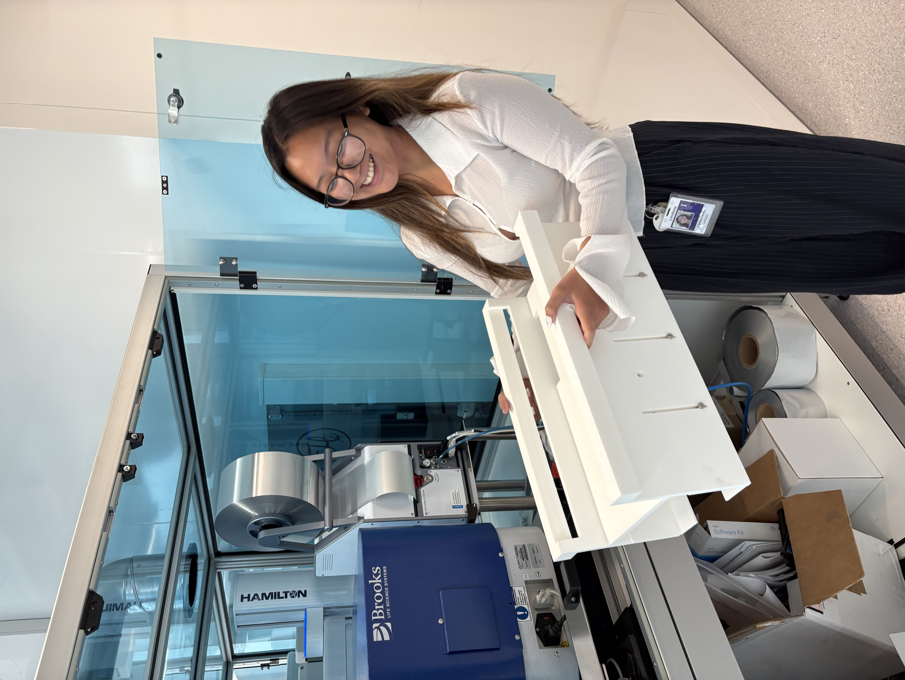
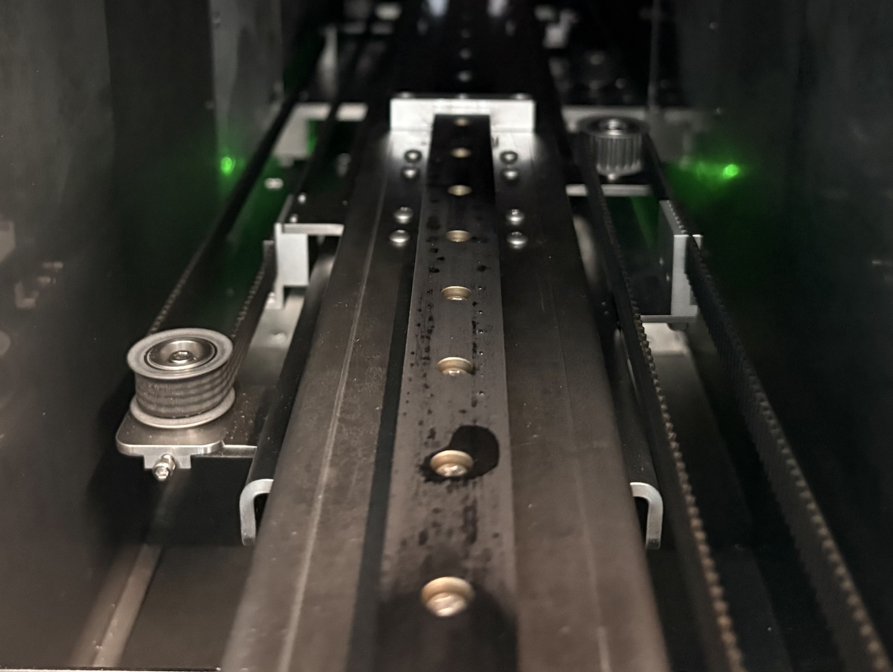
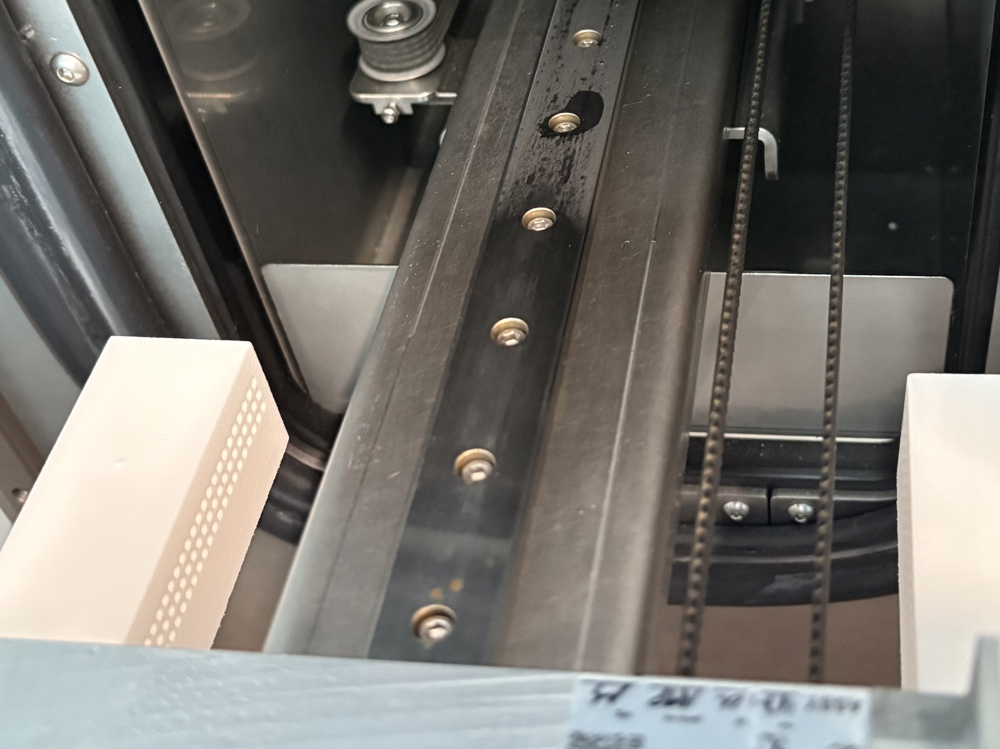

selected project
MRU
Moisture Reduction Unit (MRU) — A design made from concept to execution to support loads, and prevent condensation from freezing.

The Design
The Process



Reflection
My first corporate opportunity. Lots to reflect on here. I was in Denmark for the first time, living alone for 3 months. It was a bit lonely, along with the new job, I felt pretty burnt out. However, I got a lot more confident in my abilities as an engineer, and overall as a problem solver. We ran into a lot of issues with the pneumatics, and had to switch to electronics and sensors at the last minute. It was kinda of scary for me, since I had very very limited experience with electronics, but I DID IT!! This was very exciting, This was also my first time outsourcing a 3D print, so communicating that and making sure my design was fleshed out enough to be able to send it out for printing was very new, and it came back and worked! It's not perfect, and there's a lot I would do differently now that it is being used and after testing, but I am happy with what I was able to achieve.
← Return to My Projects